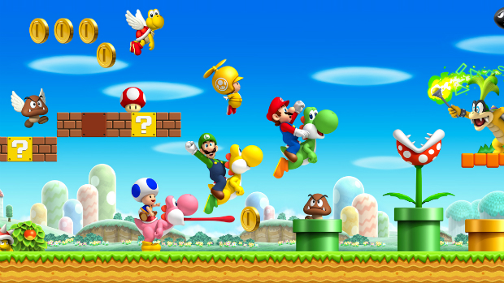
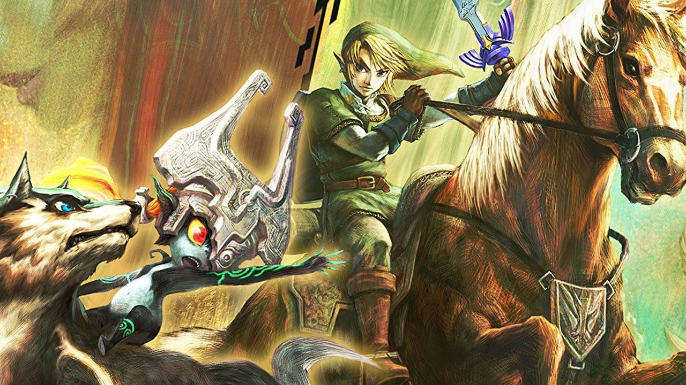

Games
New Super Mario Bros. Wii

- Relased: November 15, 2009
- Sales: 30.20 million
- Rating: 9/10
- Genere: Platformer
Mario Bros for the Wii is at its heart a rehash of the original Mario Bros game, but with better graphics and some new gimmicks. The game is a fine platformer and because of its simple controls, works well with the Wii-mote and supports up to 4 players. In the game, Mario and his crew must save Peach after Bowser steals her and the her cake. On this quest, the team must travel through a variety of worlds and past Bower's minions to save the princess.
Mario Kart Wii
- Relased: April 27, 2008
- Sales: 37.10 million
- Rating: 8/10
- Genere: Racing
Mario Kart Wii is the defacto kart racer for the Wii and definitely one of the top games for the console. This iteration of the Mario Kart is the first to have motion controls, which makes the game more inversive and interactive. The game has a huge roster of charterers, karts, and bikes to choose from and also has some stellar (and some hard and annoying) courses. This game is great for any level of gamer and no mater your age or experience, you will love this game.
Super Paper Mario
- Relased: April 9, 2007
- Sales: 2.28 million
- Rating: 8.5/10
- Genere: Action role-playing, platformer
Super Paper Mario is a great game for someone who wants to play RPG but does not want to deal with all of the confusing mechanics. The story of the game is that one day, and the Evil Count Blec decided that he was going to use the power of chaos to destroy the universe and rebuild his own. Therefore Mario must journey to find the 7 pure hearts in order to destroy the chaos. This game is a far departure from traditionally Mario games. The game has some of the crazies scenarios and worlds, including a part in which you have to play a Dating Simulator and a world which is basically Heaven and Hell.
Wii Sports
- Relased: November 19, 2006
- Sales: 82.85 million
- Rating: 7/10
- Genere: Sports
The game that revolutionized the video game world; Wii sports is a fairly basic sports game, including tennis, baseball (sort of), boxing, golf, and bowling. The difference with this sport game is that it uses motion controls to create a new sort of experience that interested everybody, even those who had never played video games before. In fact, you have probably played this game before, so you be the judge.
Wii Play
- Relased: February 12, 2007
- Sales: 28.02 million
- Rating: 6/10
- Genere: Party
Wii play is a party(-ish) game that focuses on mini-games that utilize the motion controls of the Wii. The game is for two players and includes games based on favorites, such as Duck Hunt and Tanks, and some brand new ones, such as Find Mii. This game is pretty basic and almost all of the mini-games are fun and light, while still being extremely competitive. (Note: it does have a weird bobble game that is horrible).
M&M's Kart Racing
- Relased: October 25, 2007
- Sales:
- Rating: 2/10
- Genere: Racing
M&M Racing is a poor excuse for a kart racer. The game play for this game does a terrible job of utilizing the motion controls, making the game hard to even play. The cart designs are atrocious and the courses are hard to navigate, mainly because of the poor controls. Even the power-ups in this game are hindrances, as using them actually slows you down because you will almost always crash into the sides of the coarse. Also, the SFX of the game are painful to hear as one character will constantly exclaim “Approaching sound barrier” every time he speeds up. Avoid this game at all costs.
The Legend of Zelda: Twilight Princess

- Relased: November 19, 2006
- Sales: 8.85 million
- Rating: 9.5/10
- Genere: Action-adventure
Considered one of the best installments in the Zelda franchise, Twilight Princess had sold the most copies out of any Zelda game before Breath of the Wild. This game has received several awards and is critically acclaimed to be one of the best games ever. The game features fairly realistic graphics and rather challenging puzzles and dungeons. This game is recommended for all Zelda fans and those who want to experience a quality RPG.